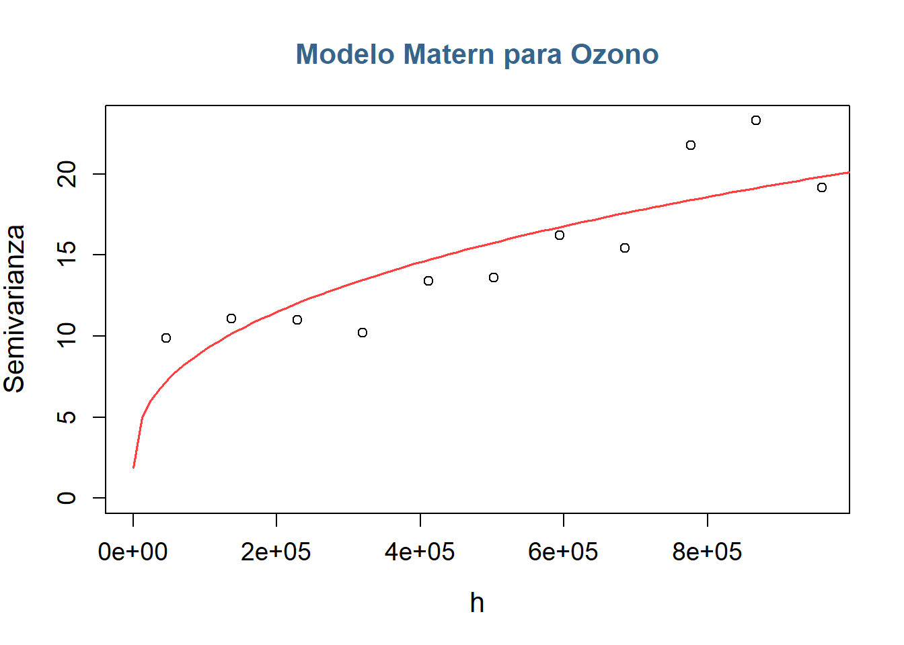

Análisis Geoestadístico de Variables Meteorológicas y Ozono en el Estado de California a las 00:00 horas del primero Marzo de 2024
1.1 Planteamiento del problema
1.1.1 Introducción
La calidad del aire influye directamente en la salud de las personas, en su bienestar y en el equilibrio del entorno. En California, este tema cobra especial relevancia: es uno de los estados más afectados por la contaminación atmosférica en Estados Unidos. Su alta densidad de población, el tráfico vehicular, la actividad industrial y fenómenos naturales como los incendios forestales hacen que muchas de sus ciudades enfrenten niveles preocupantes de contaminación.
El comportamiento de los contaminantes atmosféricos, como el ozono troposférico (O_3), depende en gran medida de las condiciones meteorológicas, entre ellas la temperatura, la velocidad del viento y la presión barométrica. Estas variables influyen en la dispersión y concentración de los contaminantes, generando patrones espaciales que pueden variar significativamente en función del tiempo y la ubicación. En este contexto, el análisis geoestadístico se presenta como una herramienta fundamental para identificar y modelar dichas dependencias espaciales, permitiendo estimar tendencias, ajustar modelos teóricos de variabilidad y construir mapas de predicción que aporten una comprensión más precisa de su comportamiento.
1.1.2 Descripción de los datos
Los datos objeto de este estudio provienen de la Agencia de Protección Ambiental (EPA) de los Estados Unidos y corresponden a registros horarios obtenidos de las estaciones de monitoreo durante el mes de marzo de 2024. En particular, se analizan las variables Temperatura ambiente (Temp), Ozono (O_3) y Velocidad del viento (WS).
1.1.2.1 Unidades
Temperatura ambiente: Medida en grados celsius (C°) con una intensidad horaria.
Ozono: Medida en partes por billón (ppb) con una intensidad horaria.
Velocidad del viento: Medida en metros por segundo (m/s) con una intensidad horaria.
1.1.3 Objetivos
1.1.3.1 Objetivo general
Estudiar e identificar la tendencia y los patrones espaciales de las variables meteorológicas y del ozono troposférico (O_3) mediante el uso de herramientas de análisis geoestadístico, con el propósito de establecer modelos de predicción espacial que permitan caracterizar su comportamiento en el estado de California durante un periodo específico de tiempo de marzo de 2024.
1.1.3.2 Objetivos específicos
Realizar un análisis de estacionariedad en media, estudiando para cada variable la estructura de la media, identificando la existencia de dependencia espacial y modelándola en consecuencia.
Construir el semivariograma empírico a partir de los datos y ajustar un modelo teórico que describa la dependencia espacial de cada variable.
Aplicar la técnica de Kriging para construir los mapas de predicción espacial y los mapas de incertidumbre asociados, con el fin de representar la distribución esperada de las variables y evaluar la precisión de las estimaciones.
1.2 Análisis Geoestadístico Univariado
En el análisis se consideran los datos de todas las variables registrados a las 00:00 horas del 1 de marzo de 2024.
En el siguiente mapa se presenta la distribución territorial de las estaciones de Ozono, así mismo como sus valores muestrales:
Ver código
y_oz <- Ozono[1,] #Tomar una fechay_oz <-cbind(colnames(y_oz),t(y_oz[1,]))y_oz <- y_oz[-1,]y_oz <-as.data.frame(y_oz)y_oz <-na.omit(y_oz)y_oz$V1 <-as.numeric(y_oz$V1)y_oz <-inner_join(y_oz, EstacionesOz, by=c("V1"="AQSID"))datosOZ <- y_oz[,c(13,14,2)] #DatosOz es la base con coordenadas + variablecolnames(datosOZ)=c("Este","Norte","Ozono")datosOZ$Ozono <-as.numeric(datosOZ$Ozono)datosOZ_sf <-st_as_sf(datosOZ, coords =c("Este", "Norte"), crs =3310)datosO_sf_wgs84 <-st_transform(datosOZ_sf, crs =4326)palO <-colorNumeric(palette ="viridis", domain = datosO_sf_wgs84$Ozono)leaflet() %>%addProviderTiles(providers$CartoDB.Positron) %>%addPolygons(data = sh_mundos_wgs84, fill =FALSE, color ="black", weight =2) %>%addCircleMarkers(data = datosO_sf_wgs84,fillColor =~palO(Ozono),fillOpacity =0.8,color ="black",weight =1,radius =3,popup =~paste("Ozono:", Ozono, "°C")) %>%addLegend(pal = palO, values = datosO_sf_wgs84$Ozono, title ="Ozono (ppb)")
Los datos observados son trabajados en el formato geodata mediante el uso de la función as.geodata() del paquete GeoR. El resumen de las coordenadas y la variable Ozono se presenta tabularmente en seguida:
Ahora, se procede a revisar el comportamiento de la media de la variable con respecto a las coordenadas Este y Norte. Para entender de mejor manera la distribución de la variable ozono se presentan la matriz de correlación muestral y los siguientes gráficos:
En el gráfico se observa una relación polinomial de la variable Ozono con respecto a las coordenadas en Norte, mientras que con respecto a las coordenadas en Este se observa una correlación lineal. Se prueba con varios modelos hasta encontrar aquel que mitigue el efecto espacial de mejor manera.
1.2.1.1.1 Ajuste del Modelo
El modelo que mejor atrapa el efecto de la media es:
fitO <-lm(Ozono~I(Norte^2)+I(Norte^3)+Este, data = datosOZ) pander::pander(summary(fitO))
Estimate
Std. Error
t value
Pr(>|t|)
(Intercept)
34.99
0.6033
58
2.656e-97
I(Norte^2)
5.085e-11
1.078e-11
4.716
5.931e-06
I(Norte^3)
7.94e-17
1.922e-17
4.131
6.297e-05
Este
1.416e-05
3.326e-06
4.257
3.855e-05
Fitting linear model: Ozono ~ I(Norte^2) + I(Norte^3) + Este
Observations
Residual Std. Error
R^2
Adjusted R^2
139
3.984
0.4223
0.4094
Se observa que todos los coeficientes del modelo resultan estadísticamente significativos. Además, aunque el valor de R^2 (0.42) no es particularmente alto, es lo suficientemente representativo como para considerar que el ajuste del modelo fue adecuado y aporta información relevante sobre el fenómeno analizado.
En los gráficos de dispersión, usando ggplot y geoR, se aprecia también una notable mitigación del efecto de las coordenadas sobre la variable ozono, lo que sugiere que la estructura espacial de la media fue modelada de manera adecuada..
1.2.1.2 Estudio del Semivariograma
1.2.1.2.1 Estimación Empírica del Semivariograma
A continuación, se presenta la estimación del semivariograma obtenida con la función variog(). Para asegurar la fiabilidad de los resultados, se especifican los argumentos estimator.type = "modulus" y pairs.min=50, con el fin de utilizar un estimador robusto y garantizar un número mínimo adecuado de pares en cada intervalo de distancia.
Se observa que la estimación de la varianza de la variable incrementos es más estable y presenta valores más bajos al remover la tendencia, lo que indica que en este caso el semivariograma refleja de manera más adecuada la verdadera estructura espacial del fenómeno.
1.2.1.2.2 Estimación del Modelo Teórico de Semivariograma
Para obtener unos valores iniciales de los modelos teóricos se usa la función EyeFit() de la librería GeoR.
Los modelos obtenidos ajustando por EyeFit(), son:
Se observa que los modelos Exponencial y Gneiting presentan un menor error cuadrático medio, sin embargo, ambos modelos presentan un nugget considerablemente alto en relación a la magnitud de la semivarianza observada. Por esta razón se opta por utilizar el modelo Matern para realizar la predicción.
1.2.1.3 Kriging
El modelo Matern, con los parámetros obtenidos por MCO, que se usará para realizar Kriging es el siguiente:

Para realizar la predicción, se genera una muestra aleatoria de puntos dentro del polígono que delimita el estado de California mediante la función spsample() del paquete sp. Sobre estos puntos se estiman los valores esperados aplicando el método de Kriging de vecinos cercanos, con el fin de mejorar la precisión de las estimaciones al considerar las grandes distancias características del territorio californiano. El procedimiento se implementa mediante la función krige() de gstat, especifícando la opción nmin=20 y utilizando la función predict() de base de R.
Los resultados del Kriging indican que la calidad del aire tiende a ser más deficiente en el sur de California y en el Valle Central, donde se observan las concentraciones predichas más altas de ozono. Dado que estas regiones cuentan con una alta densidad de estaciones de monitoreo, se cuenta con una mayor confiabilidad y precisión en las estimaciones del modelo (reflejada en valores bajos de varianza o coeficiente de variación). En contraste, las predicciones sobre la concentración de ozono presentan mayor incertidumbre (varianza o CV elevados) en las zonas rurales y fronterizas del norte y este del estado, debido a la menor disponibilidad de estaciones de observación en esas áreas.
A pesar de que los coeficientes de variación presentan valores muy bajos, todos inferiores al 11%, es importante interpretar estos resultados con cautela. Aunque se aplicó un Kriging de vecinos cercanos para mitigar el efecto de las grandes distancias entre puntos, es posible que aún persista cierto nivel de ruido o variabilidad residual asociado a la extensión geográfica del área californiana.
1.2.1.3.1 Métricas de Validación Cruzada
A continuación se presentan las métricas de validación cruzada obtenidas mediante la función krige.cv() del paquete gstat:
El modelo de Kriging muestra un desempeño sólido y equilibrado. El sesgo es bastante bajo, como se puede evidenciar en el valor del ME, de maneta similar los errores promedio ponderados se mantienen en un rango aceptable y se alcanza una correlación alta entre lo observado y lo predicho. Aun así, el R^2 indica que el modelo explica alrededor del 50% de la variabilidad (algo coherente con la pepita observada en el semivariograma empírico). Los resultados en conjunto sugieren que el modelo captura bien los patrones espaciales generales del ozono y ofrece predicciones confiables en la mayor parte del territorio.
Estos indicadores coinciden con lo observado en los mapas: las predicciones son más precisas en el sur de California y el Valle Central, donde la mayor densidad de estaciones reduce la incertidumbre, mientras que en zonas rurales y fronterizas la falta de información aumenta la variabilidad de las estimaciones. Aun cuando los coeficientes de variación son bajos, es importante interpretar con cautela las áreas con poca cobertura, ya que pueden conservar algo de ruido residual debido a la extensión y heterogeneidad del estado.
1.2.2 Variable Temperatura
En el siguiente mapa se presenta la distribución territorial de las estaciones de Temperatura, así mismo como sus valores muestrales:
Los datos observados son trabajados en el formato geodata mediante el uso de la función as.geodata() del paquete GeoR. El resumen de las coordenadas y la variable Ozono se presenta tabularmente en seguida:
Ahora, se procede a revisar el comportamiento de la media de la variable con respecto a las coordenadas Este y Norte. Para entender de mejor manera la distribución de la variable ozono se presentan la matriz de correlación muestral y los siguientes gráficos:
En la matriz de correlaciones se observa una asociación notable entre la temperatura con la coordenada Norte. No obstante, esta relación no se aprecia de forma claramente lineal en el gráfico de dispersión, por lo que se opta por ajustar un polinomio con el fin de corregir la tendencia y capturar mejor la variación espacial de la variable.
1.2.2.1.1 Ajuste del Modelo
El modelo que mejor atrapa el efecto de la media es:
Temperatura = \beta_0 + \beta_1 \times Norte + \beta_2 \times Norte^2
Ver código
fitT <-lm(Temperatura~Norte+I(Norte^2), data = datosT) pander::pander(summary(fitT))
Estimate
Std. Error
t value
Pr(>|t|)
(Intercept)
13.26
0.5352
24.77
8.812e-49
Norte
-2.229e-05
3.23e-06
-6.901
2.676e-10
I(Norte^2)
-3.754e-11
8.551e-12
-4.39
2.469e-05
Fitting linear model: Temperatura ~ Norte + I(Norte^2)
Observations
Residual Std. Error
R^2
Adjusted R^2
122
4.049
0.3199
0.3084
Todos los coeficientes del modelo son significativos. Sin embargo, el R^2 es relativamente bajo, por lo que se considera necesario verificar gráficamente si la tendencia espacial fue efectivamente mitigada.
Los gráficos evidencian que la tendencia existente entre la variable y la coordenada Norte ha sido mitigada, lo que indica que se ha logrado un ajuste adecuado del modelo.
1.2.2.2 Estudio del Semivariograma
1.2.2.2.1 Estimación Empírica del Semivariograma
A continuación, se presenta la estimación del semivariograma obtenida con la función variog(). Para asegurar la fiabilidad de los resultados, se especifican los argumentos estimator.type = "modulus" y pairs.min=50, con el fin de utilizar un estimador robusto y garantizar un número mínimo adecuado de pares en cada intervalo de distancia.
Cuando no se remueve la tendencia, la semivarianza alcanza valores más altos y presenta una forma aparentemente más regular, aunque dicha regularidad está influenciada por la tendencia global de los datos. En cambio, al eliminar la tendencia, los valores de semivarianza disminuyen y el patrón pierde suavidad, pero el variograma refleja con mayor fidelidad la verdadera dependencia espacial.
1.2.2.2.2 Estimación del Modelo Teórico de Semivariograma
Para obtener unos valores iniciales de los modelos teóricos se usa la función EyeFit() de la librería GeoR.
Los modelos obtenidos ajustando por EyeFit(), son:
El modelo con menor MSE corresponde al modelo Gaussiano. No obstante, debido a la inestabilidad numérica observada durante el proceso de predicción, se opta por emplear el modelo Esférico ajustado mediante mínimos cuadrados ponderados con la ponderación h/n, el cual representa la segunda mejor alternativa en términos del MSE.
1.2.2.3 Kriging
El modelo Esférico, con los parámetros obtenidos por WLS usando la ponderación h/n, que se usará para realizar Kriging es el siguiente:
Para realizar la predicción, se genera una muestra aleatoria de puntos dentro del polígono que delimita el estado de California mediante la función spsample() del paquete sp. Sobre estos puntos se estiman los valores esperados aplicando el método de Kriging de vecinos cercanos, con el fin de mejorar la precisión de las estimaciones al considerar las grandes distancias características del territorio californiano. El procedimiento se implementa mediante la función krige() de gstat, especifícando la opción nmin=20 y utilizando la función predict() de base de R.
Los mapas de kriging para la temperatura muestran que las zonas más cálidas y con predicciones más confiables se concentran en el sur de California y en el Valle Central. En contraste, las regiones con mayor incertidumbre (alta varianza y coeficiente de variación) se ubican principalmente en el extremo norte y a lo largo de las fronteras del estado.
Esta menor fiabilidad en el norte se debe a la escasa presencia de estaciones de monitoreo en esas extensas áreas. El modelo de semivarianza empleado (Esférico) presenta un rango de influencia de aproximadamente 175 km, lo que implica que las mediciones dejan de ser útiles para la predicción más allá de esa distancia. Aunque se aplicó un Kriging de vecinos cercanos para mitigar el efecto de estas grandes distancias, persiste un nivel considerable de incertidumbre en las zonas con baja densidad de observaciones
1.2.2.3.1 Métricas de Validación Cruzada
A continuación se presentan las métricas de validación cruzada obtenidas mediante la función krige.cv() del paquete gstat:
Ver código
invisible(cv_t <-krige.cv(Temperatura ~ Norte +I(Norte^2), datosT,model = best_model_T))pander::pander(metricas_cv(cv_t), digits=3)
ME
MAE
RMSE
R2
MPSE
COR
-0.164
1.85
3.19
0.568
3.44
0.761
El ME cercano a cero indica que el Kriging no presenta un sesgo sistemático, lo cual es coherente con las zonas donde el modelo predice bien, especialmente en el sur y en el Valle Central. Los valores de MAE y RMSE muestran que el error promedio es moderado y aceptable para un fenómeno con alta variabilidad espacial como la temperatura. Sin embargo, estos valores sugieren que, en las regiones con poca densidad de estaciones, como el norte del estado, los errores tienden a aumentar debido a la mayor incertidumbre.
El R^2de 0.568 y la correlación de 0.715 reflejan una relación sólida entre las predicciones y los valores observados, lo cual concuerda con la mayor confiabilidad del modelo en las áreas bien monitoreadas. Sin embargo, estos indicadores también sugieren que aún queda una parte importante de variabilidad sin capturar, algo consistente con las zonas rurales y fronterizas donde la distancia entre estaciones supera con frecuencia el rango del modelo esférico. En conjunto, las métricas confirman un buen desempeño general, pero también respaldan la necesidad de interpretar con cautela las predicciones en las áreas con baja cobertura.
1.2.3 Variable Velocidad del viento
En el siguiente mapa se presenta la distribución territorial de las estaciones de Velocidad del Viento, así mismo como sus valores muestrales:
Los datos observados son trabajados en el formato geodata mediante el uso de la función as.geodata() del paquete GeoR. El resumen de las coordenadas y la variable Ozono se presenta tabularmente en seguida:
Ahora, se procede a revisar el comportamiento de la media de la variable con respecto a las coordenadas Este y Norte. Para entender de mejor manera la distribución de la variable ozono se presentan la matriz de correlación muestral y los siguientes gráficos:
En la matriz de correlaciones no se aprecia una asociación fuerte ni evidente entre la velocidad del viento y las coordenadas espaciales. Sin embargo, los gráficos sugieren una posible relación, aunque débil, por lo que se explorarán distintos modelos hasta identificar aquel que describa mejor la tendencia observada.
1.2.3.1.1 Ajuste del Modelo
El modelo que mejor atrapa el efecto de la media es:
WindSpeed = \beta_0 + \beta_1 \times Este + \beta_2 \times Norte + \beta_3 \times Este \times Norte
Ver código
fitWS <-lm(WindSpeed~Este*Norte, data = datosWS) pander::pander(summary(fitWS))
Estimate
Std. Error
t value
Pr(>|t|)
(Intercept)
6.398
0.3639
17.58
4.751e-30
Este
2.069e-05
2.674e-06
7.739
1.895e-11
Norte
1.159e-05
1.808e-06
6.411
7.746e-09
Este:Norte
2.558e-11
7.483e-12
3.419
0.000968
Fitting linear model: WindSpeed ~ Este * Norte
Observations
Residual Std. Error
R^2
Adjusted R^2
89
1.938
0.4851
0.4669
Se observa que todos los coeficientes del modelo resultan estadísticamente significativos, y que el ajuste presenta un R^2 de 0.48, lo cual indica un nivel de explicación adecuado de la variabilidad de la velocidad del viento.
En los gráficos se observa que el patrón asociado a las coordenadas se ha atenuado considerablemente, lo que sugiere que el modelo se ajustó de manera adecuada.
1.2.3.2 Estudio del Semivariograma
A continuación, se presenta la estimación del semivariograma obtenida con la función variog(). Para asegurar la fiabilidad de los resultados, se especifican los argumentos estimator.type = "modulus" y pairs.min=50, con el fin de utilizar un estimador robusto y garantizar un número mínimo adecuado de pares en cada intervalo de distancia.
Se observa que la estimación de la varianza de la variable incrementos presenta valores más bajos al remover la tendencia, lo que indica que en este caso el semivariograma refleja de manera más adecuada la verdadera estructura espacial del fenómeno.
1.2.3.2.2 Estimación del Modelo Teórico de Semivariograma
Para obtener unos valores iniciales de los modelos teóricos se usa la función EyeFit() de la librería GeoR. Por su parte, para el modelo coseno se realizo una estimación a ojo mediante la construcción de una función sv_cos() basada en la literatura.
Los modelos obtenidos ajustando por EyeFit() y sv_cos(), son:
Al comparar los valores del MSE, se determinó que el modelo más adecuado es el Wave, ajustado mediante el método de WSL con ponderación basada en el número de pares por distancia en el semivariograma.
1.2.3.3 Kriging
El modelo Wave, con los parámetros obtenidos por WLS usando la ponderación 1/n, que se usará para realizar Kriging es el siguiente:
Para realizar la predicción, se genera una muestra aleatoria de puntos dentro del polígono que delimita el estado de California mediante la función spsample() del paquete sp. Sobre estos puntos se estiman los valores esperados aplicando el método de Kriging de vecinos cercanos, con el fin de mejorar la precisión de las estimaciones al considerar las grandes distancias características del territorio californiano. El procedimiento se implementa mediante la función krige() de gstat, especifícando la opción nmin=20 y utilizando la función predict() de base de R.
La velocidad del viento es más elevada en el Valle Central y en el interior sur de California, y, en general, las predicciones en la mitad sur del estado muestran buena precisión (bajo coeficiente de variación). La incertidumbre más alta se concentra en el extremo norte, debido a la escasez de datos. El modelo Wave se utiliza para capturar la naturaleza variable del viento; sin embargo, la varianza sigue siendo elevada en zonas con baja densidad de estaciones y en algunas áreas muestreadas donde el viento probablemente es más turbulento o errático, lo que dificulta la interpolación. Para mitigar el efecto de las grandes distancias entre estaciones, se aplicó un Kriging de vecinos cercanos, lo que mejora la fiabilidad de las predicciones en puntos aislados.
1.2.3.3.1 Métricas de Validación Cruzada
A continuación se presentan las métricas de validación cruzada obtenidas mediante la función krige.cv() del paquete gstat:
El ME cercano a cero indica que el Kriging no presenta un sesgo sistemático al estimar la velocidad del viento, lo que es coherente con el buen desempeño del modelo en la mitad sur del estado, donde la mayor disponibilidad de estaciones reduce la incertidumbre. Los errores promedio también son bajos; muestran que las diferencias entre lo observado y lo predicho son relativamente pequeñas, lo cual se ajusta a las zonas donde la variación del viento es más estable y el coeficiente de variación resultó reducido.
El valor del R^2 y la correlación, indican que el modelo captura más de la mitad de la variabilidad del viento y mantiene una relación fuerte entre las predicciones y los valores reales. Sin embargo, estos valores también sugieren que existe una parte importante de variabilidad que no logra modelarse del todo, algo que coincide con las zonas del norte donde el viento es más errático y la densidad de estaciones es baja. En conjunto, las métricas reflejan un modelo con buen rendimiento general, pero cuya precisión disminuye inevitablemente en áreas donde el fenómeno es más turbulento o hay grandes distancias entre puntos de observación.
1.3 Conclusiones
Se logró modelar y mitigar la tendencia espacial de todas las variables analizadas. Las correlaciones iniciales con las coordenadas, principalmente para temperatura, se redujeron significativamente tras el ajuste de los modelos de media, evidenciado tanto en los gráficos de dispersión como en los coeficientes significativos de los modelos.
Los modelos de semivariograma ajustados (Esférico, Wave y Exponencial según la variable) capturaron la dependencia espacial de manera adecuada. El uso del Kriging de vecinos cercanos permitió mitigar el efecto de las grandes distancias entre estaciones de monitoreo, mejorando la precisión en zonas con baja densidad de datos, aunque persistió incertidumbre relativa en el norte y áreas fronterizas.
Las predicciones son más confiables en regiones con alta densidad de estaciones (sur y Valle Central), mientras que la varianza y el coeficiente de variación son mayores en el norte y en áreas rurales o fronterizas, reflejando la menor disponibilidad de datos y la complejidad local de ciertas variables, como la velocidad del viento.
Las métricas de validación confirmaron el buen desempeño general de los modelos de Kriging. El sesgo fue prácticamente nulo y los errores promedio se mantuvieron en niveles moderados para todas las variables, mientras que las correlaciones superiores a 0.70 y los valores de R^2 cercanos al 0.60 reflejan una relación sólida entre los valores observados y los predichos.
La temperatura es más alta en el sur del estado y en el Valle Central. La velocidad del viento muestra máximos en el Valle Central y el interior sur, reflejando la heterogeneidad espacial del comportamiento atmosférico en California.
El enfoque geoestadístico permitió cumplir los objetivos planteados: se identificaron patrones espaciales, se estimaron semivariogramas y se ajustaron modelos teóricos adecuados, y se construyeron mapas de predicción y de incertidumbre que representan de manera confiable la distribución espacial de las variables. Esto demuestra que la metodología es útil para caracterizar la variabilidad espacial de variables meteorológicas y contaminantes como el ozono, incluso en territorios extensos como California